Перейти на главную страницу справочника.
Схемы соединений и подключения обмоток электродвигателей холодильного компрессора 3000 об/мин, Y/Δ, Δ/ΔΔ, Y/YY.
Схемы соединений обмоток электродвигателей холодильного компрессора 3000 об/мин, Y/Δ.
Схема соединений обмотки, количество параллельных ветвей а=1, Y/Δ. 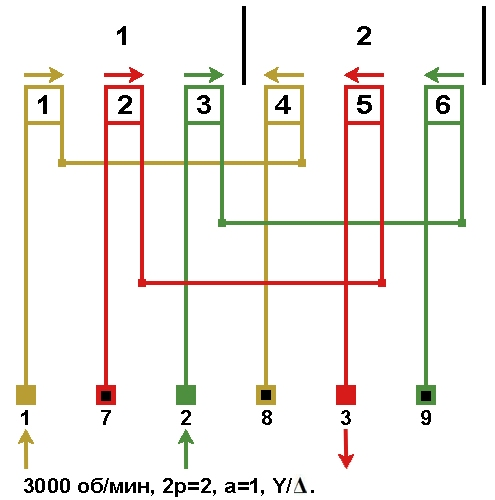
{kind=link}
Схема соединений обмотки, количество параллельных ветвей а=2, Y/Δ. 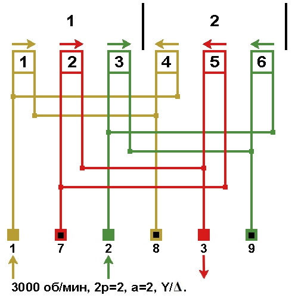
{kind=link}
Схемы подключения обмоток электродвигателей холодильного компрессора 3000 об/мин, Y/Δ.
Пуск двигателя с соединениями Y/Δ. 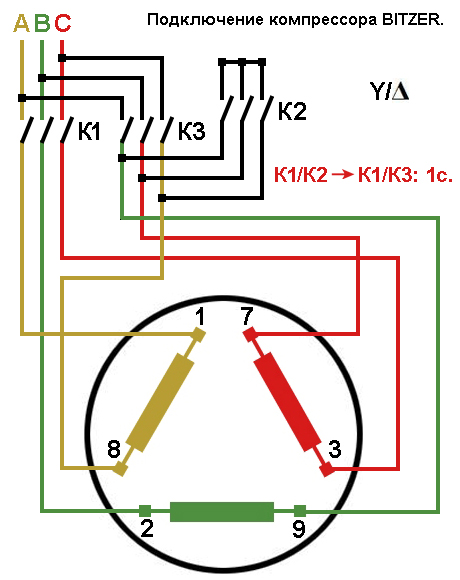
{kind=link}
Прямой пуск двигателя Δ. 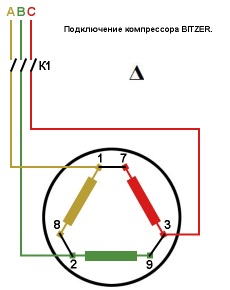
{kind=link}
Схемы подключения обмоток электродвигателей холодильного компрессора 3000 об/мин, Y/Δ. 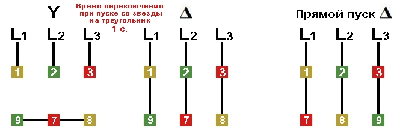
{kind=link}
Схема соединений электродвигателей холодильного компрессора с разделёнными обмотками "PW" 3000 об/мин, Δ/ΔΔ. 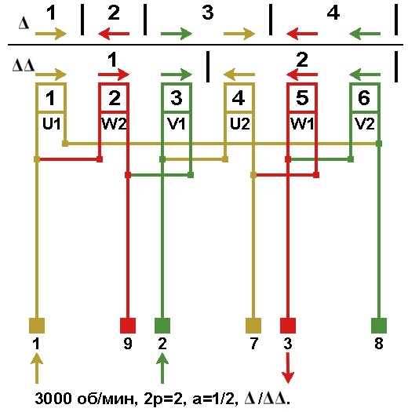
{kind=link}
Схемы подключения электродвигателей холодильного компрессора с разделёнными обмотками "PW" 3000 об/мин, Δ/ΔΔ.
Пуск двигателя с разделёнными обмотками "PW" Δ/ΔΔ. 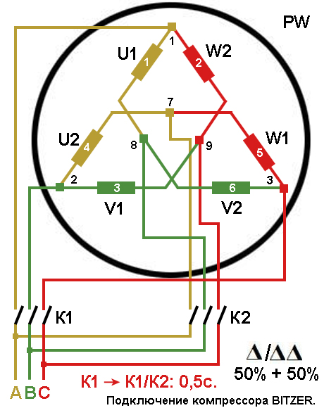
{kind=link}
Прямой пуск двигателя с разделёнными обмотками "PW" ΔΔ. 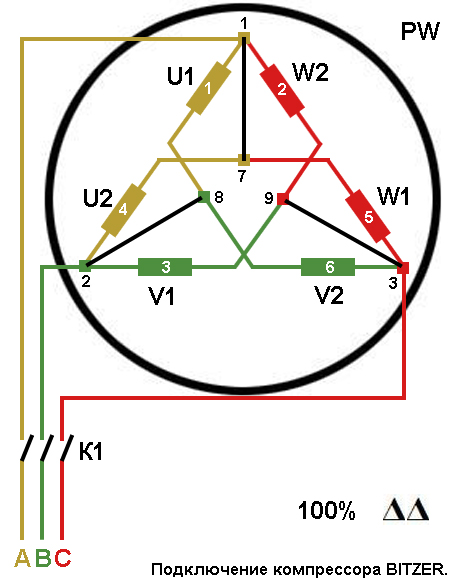
{kind=link}
Схема подключения электродвигателей холодильного компрессора с разделёнными обмотками "PW" 3000 об/мин, Δ/ΔΔ.

Схема соединений электродвигателей холодильного компрессора с разделёнными обмотками "PW" 3000 об/мин, Y/YY. 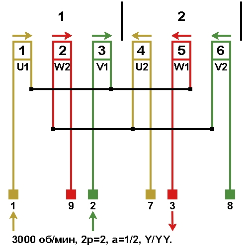
{kind=link}
Схемы подключения электродвигателей холодильного компрессора с разделёнными обмотками "PW" 3000 об/мин, Y/YY.
Пуск двигателя с разделёнными обмотками "PW" Y/YY. 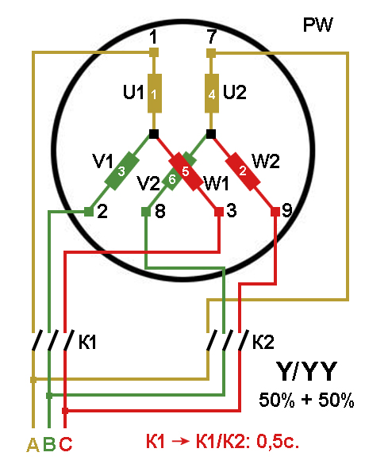
{kind=link}
Прямой пуск двигателя с разделёнными обмотками "PW" Y/YY. 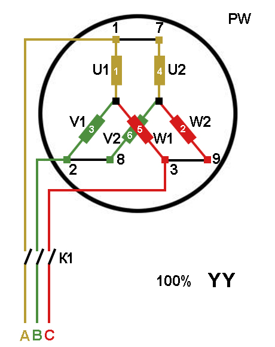
{kind=link}
Схемы подключения электродвигателей холодильного компрессора с разделёнными обмотками "PW" 3000 об/мин, Y/YY.